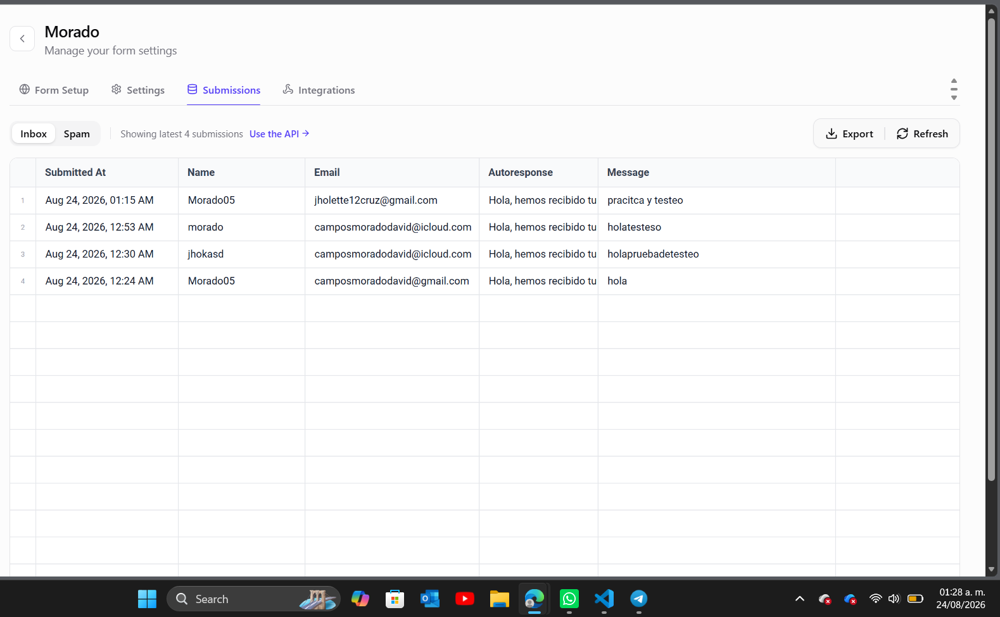

REPORTE TÉCNICO
Introducción
La creación de un portafolio digital en el ámbito de las Tecnologías de la Información es una herramienta esencial para la recopilación y trazabilidad de proyectos técnicos. En el contexto de la ciberseguridad, documentar de manera estructurada los análisis de vulnerabilidades y pruebas de penetración requiere de un contenedor ordenado, funcional y seguro.
Esta actividad sienta las bases de dicha infraestructura mediante el desarrollo de una arquitectura web estática, diseñada no solo para alojar evidencias académicas, sino para presentar un perfil profesional sólido.
Objetivo
Diseñar, implementar y publicar la estructura base del portafolio digital, mediante un sitio web funcional, accesible y correctamente organizado, que sirva como contenedor oficial de las evidencias académicas del curso de Seguridad Informática, aplicando principios de documentación técnica, orden lógico y presentación profesional.
Aprendizajes Obtenidos
Durante la ejecución de esta actividad, se consolidaron competencias en el desarrollo y estructuración de interfaces web modernas:
- Arquitectura y Diseño Frontend: Implementación de HTML5 semántico y CSS3 puro con el uso de variables globales (Custom Properties) para mantener una paleta de colores coherente y adaptativa.
- Lógica de Interacción: Creación de menús desplegables y animaciones de revelado por scroll mediante JavaScript para mejorar la experiencia de usuario (UX).
- Integración de APIs y Seguridad: Configuración de un formulario de contacto seguro conectado a la API de Web3Forms, permitiendo el enrutamiento de consultas y respuestas automáticas sin necesidad de exponer infraestructura backend.
- Despliegue y Versionado: Uso de Git para el control de versiones y despliegue del entorno en producción a través de GitHub Pages con certificado SSL (HTTPS).
Evidencia de Recepción de Datos (API)
Para comprobar la correcta integración de la API de Web3Forms en el portafolio, se realizaron pruebas de envío de datos desde el formulario de contacto. A continuación, se presenta la evidencia del panel de administración (Dashboard), donde se confirma la captura exitosa de las peticiones POST, registrando el remitente, el mensaje y validando la correcta ejecución de la autorespuesta (Autoresponse).

Conclusión
El desarrollo de este portafolio digital cumplió con éxito el propósito de crear un entorno seguro, escalable y profesional. Más allá del diseño visual, la correcta aplicación de lógica de programación y estructuración de directorios garantiza que el sitio esté preparado para alojar las futuras evidencias del curso, como reportes de análisis de vulnerabilidades y entornos de pruebas, reflejando el rigor técnico requerido en la ingeniería.